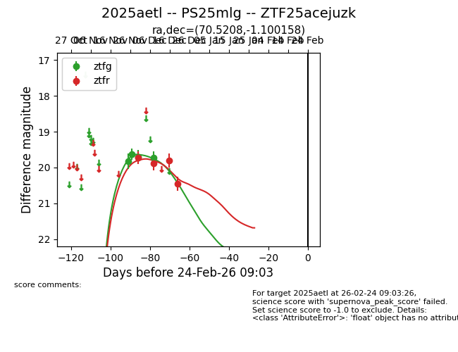
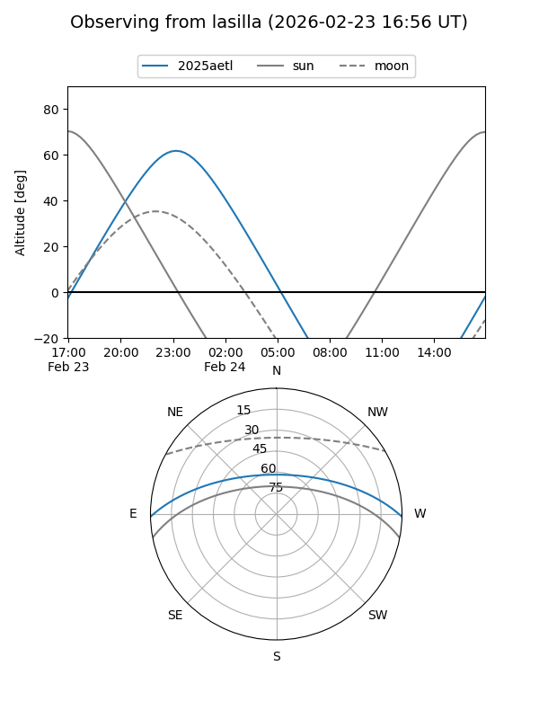
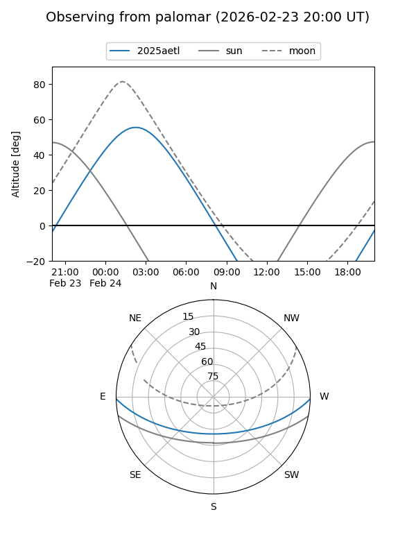
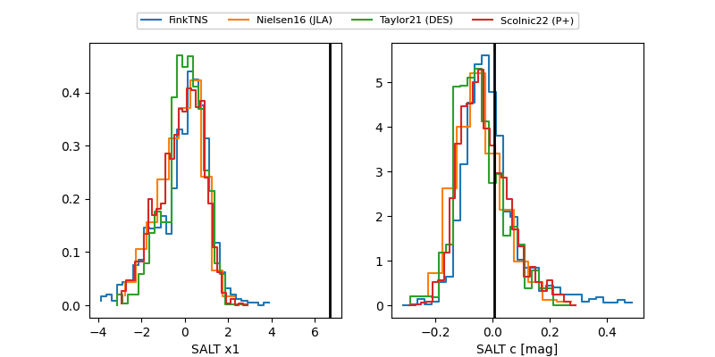

2025aetl
Target 2025aetl at 2026-01-09 12:49
Aliases and brokers:
FINK: link
Lasair: link
ALeRCE: link
TNS: link
YSE: link
alt names
ZTF25acejuzk (ztf,fink_ztf)
2025aetl (tns,yse)
PS25mlg (panstarrs)
Coordinates:
equatorial (ra, dec) = 70.5208,-1.10016
equatorial (HMS+DMS) = 04:42:04.98,-01:06:00.57
galactic (l, b) = (197.9044,-28.99561)
Flags:
Photometry:
last ztfg=19.72, ztfr=20.45
4 ztfg, 4 ztfr detections
Lightcurve

Visibility


Additional plots
